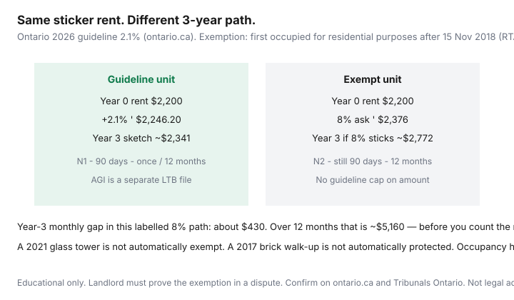

Housing · Canada
Rent-controlled vs exempt units in Ontario: how to spot which you’re applying for
Two one-beds on the same street can open at $2,200. Three renewals later, one is about $2,341 if the landlord took the 2026-style guideline each year. The other can be $2,772 if an 8% path stuck. The difference is not granite counters. It is whether the unit is covered by Ontario’s rent-increase guideline — 2.1% for 2026 (ontario.ca, used 20 Sep 2026) — or exempt because it was first occupied for residential purposes after 15 November 2018.
This is a hunter’s cost-path explainer. It is not a ruling on your address, not a reason to harass a superintendent, and not legal advice.
Disclosure: There is no natural affiliate product in a rent-control explainer. Saving Optimizer does not claim LTB, clinic, or landlord-software partnerships. Confirm occupancy rules on ontario.ca and with the Landlord and Tenant Board or a licensed advisor.
Key takeaways
- The usual test is first occupied for residential purposes after 15 Nov 2018 (RTA s.6.1) — new buildings, additions, and most new basement apartments. A renovation of already-finished space is a different story.
- Exempt units still need 90 days on an LTB form and once every 12 months. The cap on the amount is what disappears.
- Guideline units typically get Form N1. Exempt units typically get Form N2. A text is neither.
- In a dispute, the landlord must prove the exemption. Listings are not evidence.
- Vacancy decontrol still lets a landlord reset rent when you move out. Sitting-tenant protection is the asset.
The Nov 15, 2018 occupancy rule in plain language
Ontario’s residential rent-increases page: the guideline does not apply to new buildings, additions to existing buildings, and most new basement apartments occupied for the first time for residential purposes after 15 November 2018. The LTB’s 24 January 2019 note says the same shape and adds that landlords of those units must still serve 90 days’ notice on an approved form and may increase only once every 12 months — with no limit on the amount.
Statute language (high-level): no part of the building (or of the addition) was occupied for residential purposes on or before that date; separately, some new self-contained units in houses that had no more than two residential units can qualify if they became that unit after the date. A tenancy agreement entered into on or before 15 November 2018 is carved out of the exemption. Community housing, long-term care, and commercial properties are different files. Confirm your facts. This paragraph is not s.6.1.
Why two similar listings can have very different long-term cost paths
Year-one rent is a sticker. Year-four rent is a path. Guideline growth is published annually and capped (2.5% statutory ceiling on the formula; 2026 came in at 2.1%). Exempt growth is whatever the market and your walk-away will bear after a valid N2. Amenities in the new building are real. So is an 8% letter.

Questions to ask landlords and how to verify occupancy history carefully
- When was this unit first occupied as a home — not when did the last tenant leave?
- Was any part of the building used as a residence on or before 15 November 2018?
- Is there a standard-lease additional term stating the unit is exempt (ontario.ca suggests landlords can include this under section 15)?
- Which form will you use at increase time — N1 or N2?
- What increases did the last sitting tenant actually receive (year and percent), if they will say?
Do not trespass, do not demand another tenant’s private file, and do not treat MPAC or a sales listing year as a courtroom exhibit. Building permits, occupancy dates, and the landlord’s records are the usual proof in a dispute. If they refuse to answer “N1 or N2,” price the unit as exempt. Hunt with a complete application package so you are not paying a junk fee for the privilege of guessing.
Guideline increases vs market resets when you move
Vacancy decontrol: when a tenancy ends, the landlord and the next tenant agree a new rent. Guideline protection does not travel with the apartment as a permanent ceiling for newcomers. That is why sitting in a guideline unit can be worth more than a shiny exempt lobby if you will stay. It is also why “the building is rent-controlled” is sloppy language — the tenancy is what the guideline holds, until you leave.
Above-guideline increases (AGIs) on covered buildings are a separate LTB application for specific cost categories. They are not a licence to write a bigger N1. Details in the 2026 N1 checklist.
Trade-offs: newer building amenities vs rent-control protection
New stock can mean working elevators, in-suite laundry, and a locker. It can also mean an amenity fee culture and an N2. Older stock can mean guideline math and a superintendent who still has a fax machine. Price the path, not the gym:
- If you will stay three-plus years, a $100/month cheaper exempt rent can evaporate after two 8% notices.
- If you will stay 10 months for a contract, starting rent and commute win.
- Heat included vs hydro still belongs on the comparison — lease inclusions are not the guideline.
Budget scenarios over three renewals
| Year | Guideline path (2.1%) | Exempt 8% path | Monthly gap |
|---|---|---|---|
| Start | $2,200.00 | $2,200.00 | $0 |
| After year 1 | $2,246.20 | $2,376.00 | $129.80 |
| After year 2 | $2,293.37 | $2,566.08 | $272.71 |
| After year 3 | $2,341.53 | $2,771.37 | $429.84 |
Year-3 monthly gap × 12 ≈ $5,158. That is a move, a last-month deposit, and a miserable January — or a reason to have asked N1 vs N2 before you signed. If you stay, push back inside the legal frame with comps, not a speech.
When an exempt unit still makes sense
- You need accessibility, a shorter commute, or a pet rule the 1978 walk-up will not give you.
- Starting rent is enough lower that even an 8% path stays under the guideline building’s sticker for the months you will actually live there.
- The landlord will write a 12-month increase at or near 2.1% as a term — get it in the lease, not in a hallway.
- You are leaving the city in under 18 months anyway.
Safety and illegal lockouts are not spreadsheet rows. If the unit is unsafe, leave. Money math is for ordinary increases, not harassment.
Sources & date stamps
- Ontario.ca, Residential rent increases — 2026 guideline 2.1%; 90-day written notice; 15 Nov 2018 occupancy exemption; landlord proof in a dispute (used 20 Sep 2026).
- Ontario.ca, Renting in Ontario: your rights — 2027 guideline listed at 1.9% (verify before you budget).
- Tribunals Ontario / LTB, 24 Jan 2019 — s.6.1 exemption shape; 90 days and 12 months still apply; no amount cap.
- Residential Tenancies Act, 2006, s.6.1 themes — read the statute for your building.
Frequently asked questions
What is the November 15, 2018 Ontario rent-control rule?
At a high level, rental units first occupied for residential purposes after 15 November 2018 can be exempt from the annual guideline cap (RTA s.6.1; ontario.ca). That includes many new buildings, additions, and most new basement apartments. Landlords must still give 90 days’ written notice on an LTB form and may increase only once every 12 months. In a dispute, the landlord must prove the occupancy history.
Is a 2021 glass tower automatically exempt?
Often yes if no part of the building was occupied for residential purposes on or before 15 November 2018 — but conversions, phased additions, and “new” units in older houses are fact-specific. A listing slogan is not proof. Ask for occupancy history and any lease clause under section 15 of the standard lease.
Do exempt units still need Form N1?
Guideline units typically use Form N1. Units not covered by the guideline typically use Form N2. Both still need at least 90 days and the 12-month spacing. A text message is neither form. See the companion N1 validity checklist.
When does an exempt unit still make sense?
When you will stay only a year or two, when the starting rent is enough cheaper to absorb an 8% path, when you need the accessibility or location the older stock does not offer, or when you have a written smaller increase. Run three renewals before you sign.
Is this legal advice?
No. It is a long-term rent-cost explainer. Confirm your unit on ontario.ca and with the Landlord and Tenant Board or a licensed advisor.